2024.11
Hidden Names is a participatory project that brings attention to the women
whose achievements and voices have been overlooked throughout history, and
whose actions have been treated as "glitches" by patriarchal societies. It
combines a handmade book, a hands-on workshop, an AR-enabled app, and an
exhibition into a single experience that invites visitors to discover,
experience, and express these hidden stories.
The project takes inspiration from the Self-Combed
Women of the Pearl River Delta — a group who, from the mid-19th
century to the 1940s, vowed to remain unmarried as a way to resist the
unfair marriage system of the time. Their refusal to conform gradually eroded
established social "rules," a reframing echoed in the theory of
Glitch Feminism, which views glitches as
opportunities to challenge and disrupt established systems and binaries.
A brief case study of the women's statues unveiled at the opening ceremony
of the 2024 Paris Olympics anchors the concept in the present: their
existence is framed as a "glitch" in the patriarchal society, one that
continues to erode outdated social rules today.
The final exhibition invites visitors into the process of discovering — experiencing — expressing. A small installation houses the handmade book, craft materials, and AR stickers; visitors read, create their own piece, and scan a sticker to unlock a hidden woman's story and enter the online community.
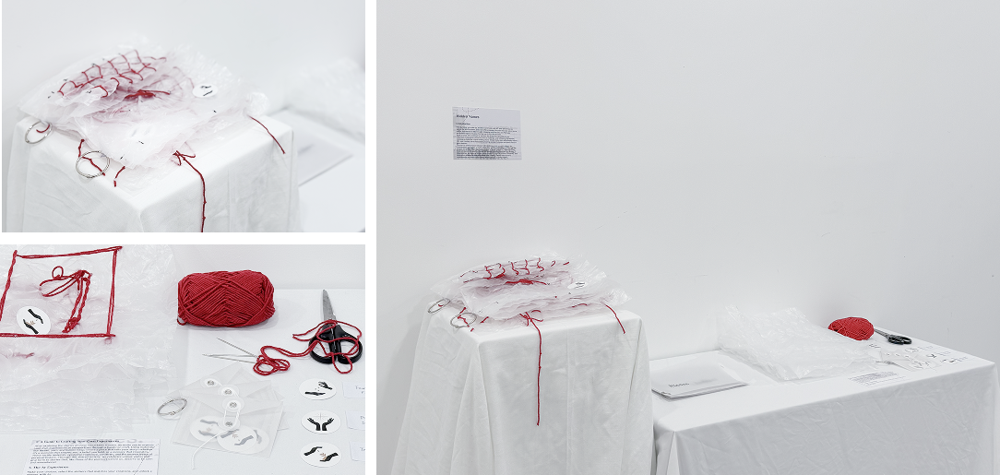
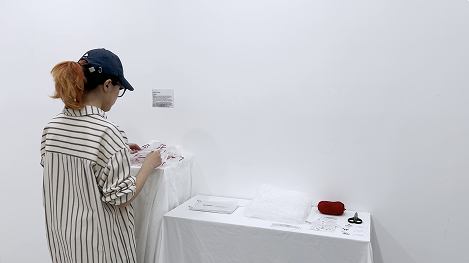
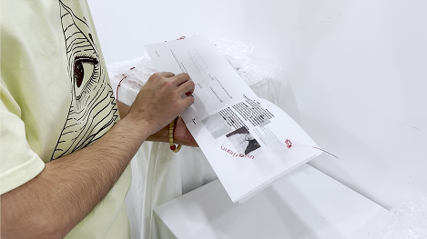
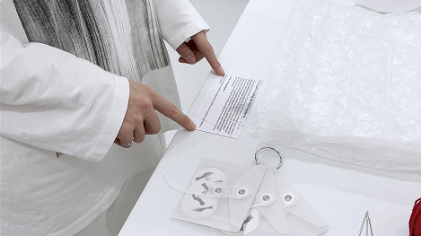
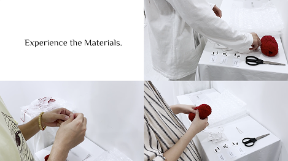
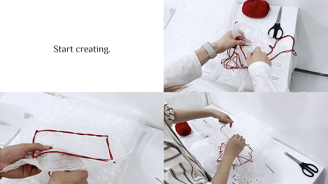
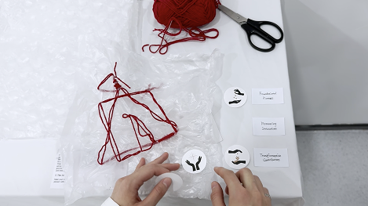
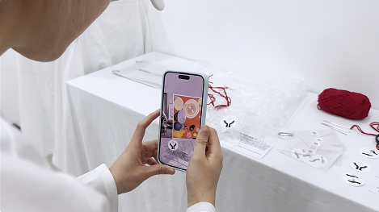
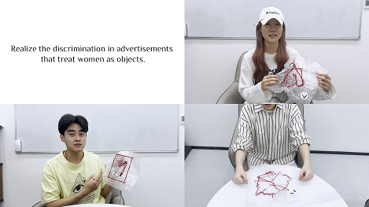
A small workshop was run ahead of the exhibition, where participants used yarn, thread, and bubble wrap to express their own experiences of being overlooked. Knotted lines, stitched names, and soft barriers emerged as recurring motifs — a shared visual language that later shaped the tone and materials of the final installation.

The companion app extends the physical experience online. A tab-style layout reveals each woman's story when flipped over, and users can browse stories by field, era, or region. An AI Reply feature lets users share what they're working on and receive a response that surfaces the unique strengths within them — a digital echo of the sticker-and-story loop at the exhibition.
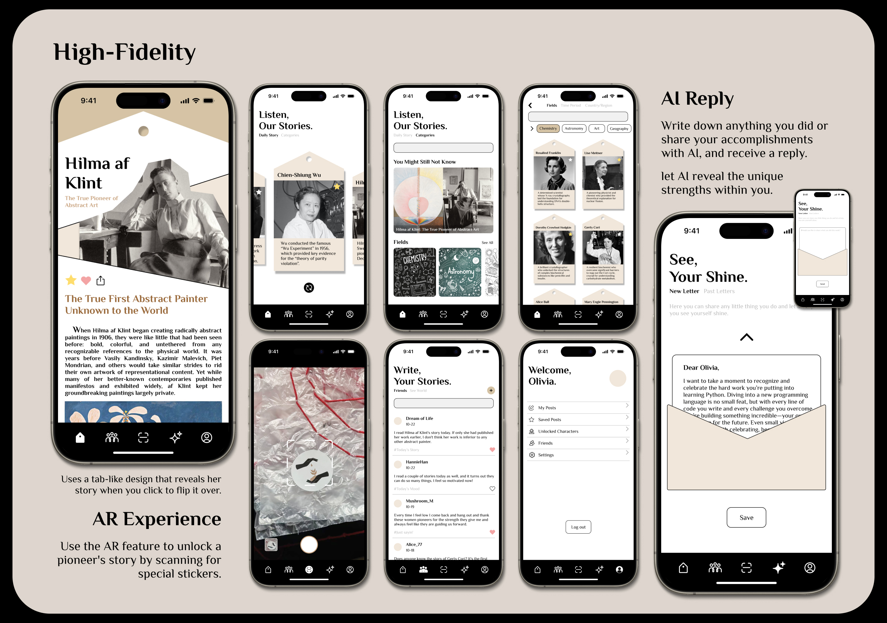
The handmade book serves as the entry point to the exhibition. Built on translucent sulfate paper, its layered pages let names and portraits fade in and out of view — a quiet metaphor for how these women have been half-seen throughout history.
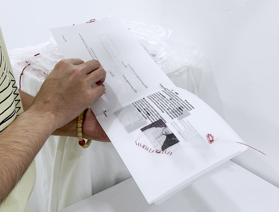
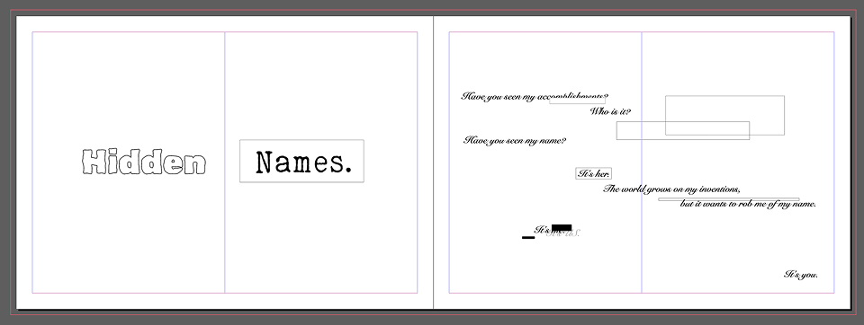
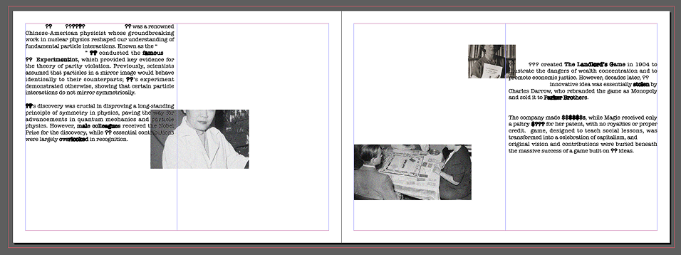
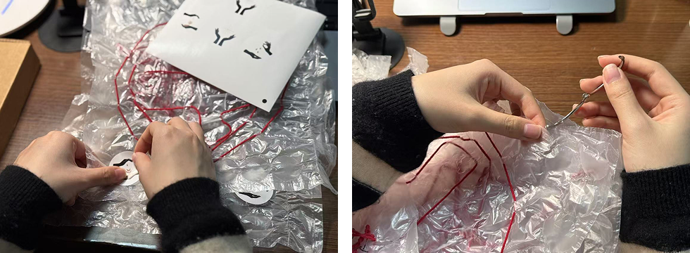
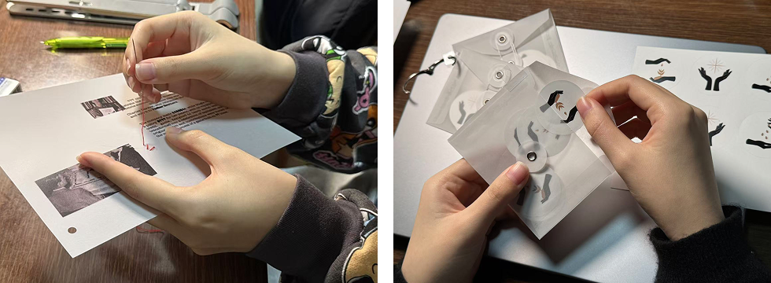
AR is the bridge between the physical and digital sides of the project. After finishing their own craft piece, visitors choose a sticker that resonates with the future identity they'd like to grow into, then scan it through the app to unlock a matching historical figure and her story — a quiet handoff from making, to discovering, to belonging to a community.
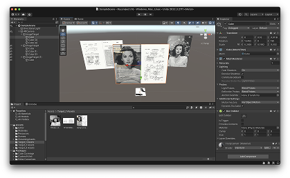
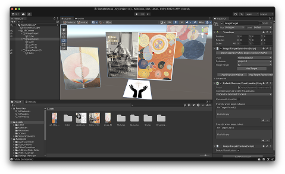
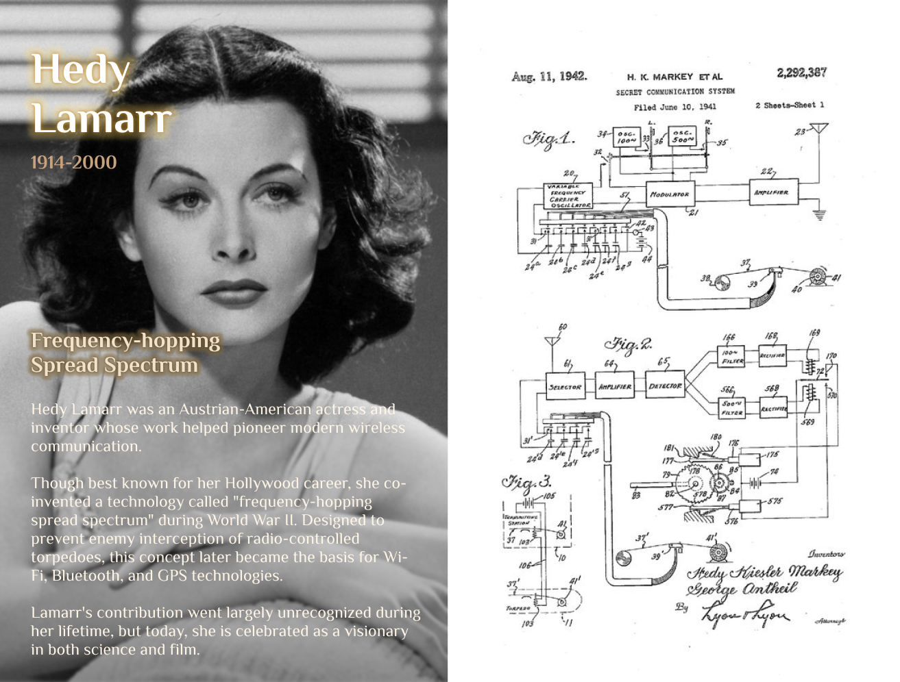
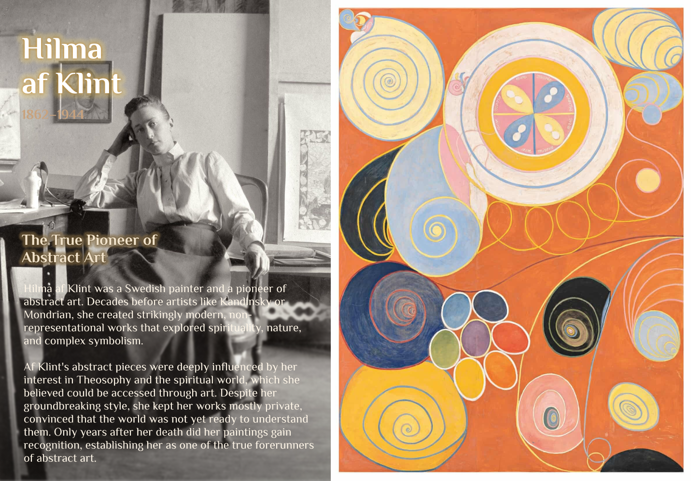
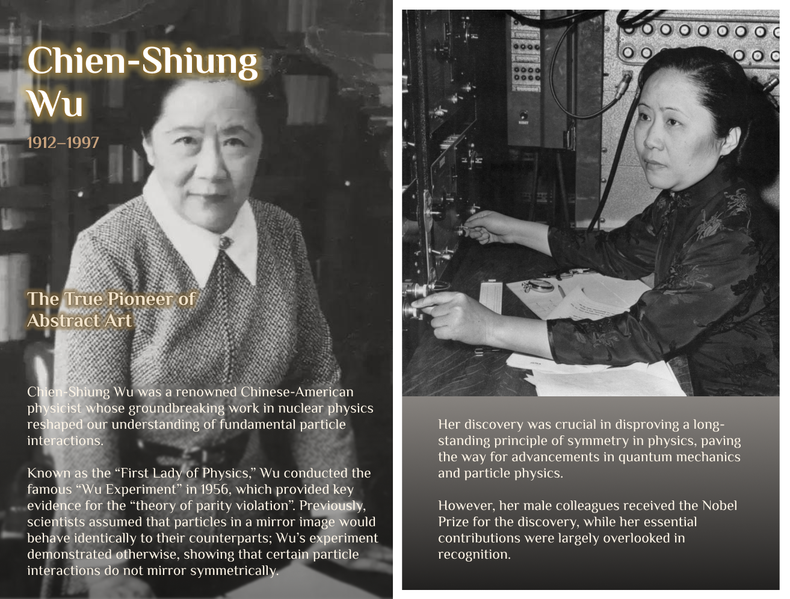
The neglect of female subjectivity isn't confined to history books — it
happens in everyday life. Hidden Names hopes to encourage young women to
step into their own stories with confidence, and to allow themselves, first
and foremost, to see themselves shine.
Medium: AR app, handmade book, participatory exhibition, workshop
Keywords: UIUX, AR, participatory design, exhibition design, storytelling,
community
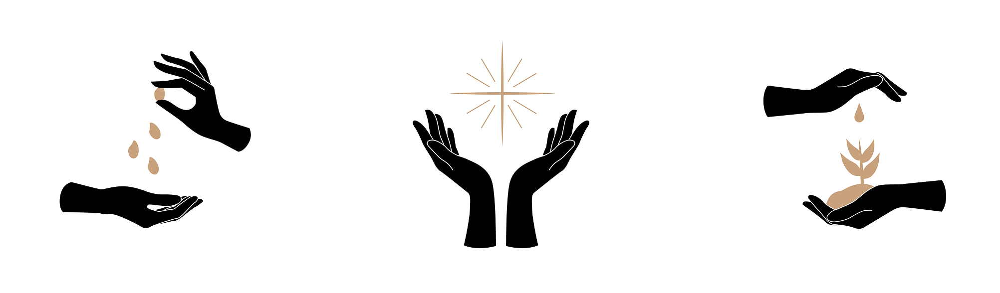